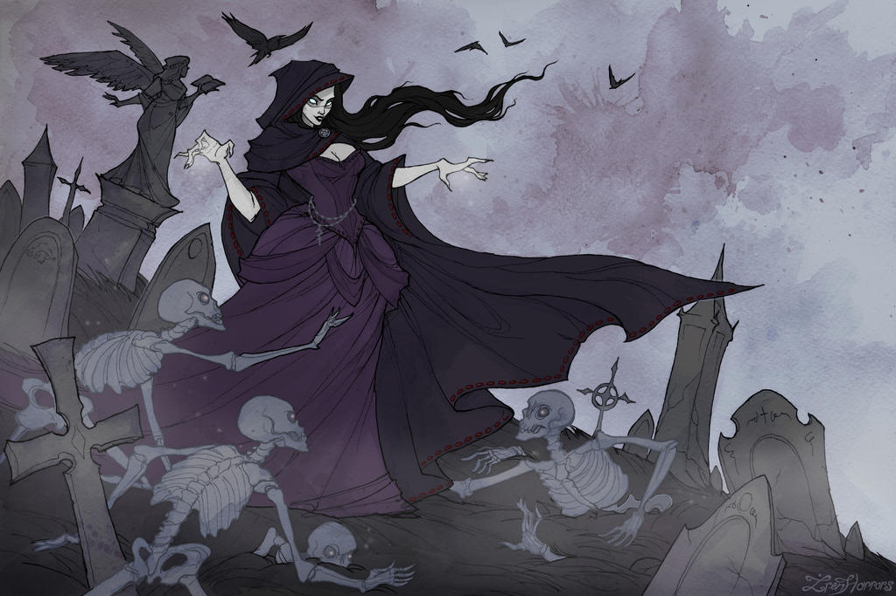

A specialist wizard who calls himself a necromancer or a cleric with the Death domain has significant power over undead and the forces of negative energy, but a dread necromancer is their true master. A practitioner of vile and forbidden arts, the dread necromancer roots about in graveyards, searching out moldering components for her obscene spells. She calls upon restless, tormented spirits of the dead, seeking their arcane secrets. She might be a consummate villain, or perhaps a tortured hero whose obsession with death leads her along questionable moral paths.
Equally likely is a humble purveyor of cheap round-the-clock labor for lumber mills, farms, smithies; anyone with a need for tireless, endless toil. Such people have taken their bodies ethically, often by paying off the debts of a living person in exchange for permission to make use of their earthly remains. Of course, those who dive head-first into the realm of the dead are generally not the most stable and mentally healthy people.
Dread necromancers often have some tragic experience in their early lives that marks the beginning of their fascination with death, undeath, and the power of necromancy. She might have been the sole survivor of a terrible massacre, hiding somewhere while she watched her family, friends, and neighbors cut down, or perhaps forced to hide in a pile of corpses in order to escape the soldiers who razed her village. Other dread necromancers experience some supernatural connection to a long-dead civilization or a single notable figure of the ancient past. She might have been haunted since childhood by strange dreams in which she muttered phrases in some forgotten language, waking with the compulsion to investigate dusty ruins in search of arcane lore.
A dread necromancer is similar to other arcane spellcasters such as wizards, sorcerers, bards, or witches. She does not learn spells as quickly as wizards do, nor have access to such a great variety of spells, but she excels at her primary repertoire - necromantic, evil, and fear-related spells. She is a combat caster, with more resilience than a wizard or sorcerer and a definite emphasis on combat-oriented necromantic spells.
Dread necromancers have much in common with wizards, particularly specialist necromancers. They often join associations of wizards or sorcerers, where such groups exist, in order to acquire more spells. Paladins and clerics of good deities dislike dread necromancers, nor do druids hold any fondness for them. Other character classes are able to work alongside dread necromancers, particularly if their own goals or methods are equally unsavory
Of the standard races, humans are most likely to become dread necromancers. They seem by nature to be more preoccupied with death than longer-lived races, and hence more apt to drift into a necromantic career. Elven dread necromancers, while rare, are not unknown, and a few hobgoblins inherit a morbid interest in death and gore from both sides of their lineage.
Among other races, dread necromancers are most common among the Tanuki and the Fae. The Fae actually hold dread necromancers in high esteem, while Tanuki society shuns them - more because they dare to worship strange powers rather than because of any real revulsion toward them and their practices.
Not all dread necromancers are evil, although the best of them could easily be described as evil-tolerant. Dread necromancers can have a good alignment, though such individuals must be pragmatists. Performing evil acts is a basic feature of the class, but some dread necromancers manage to balance evil acts with good intentions.
A dread necromancer's participation in combat is a balancing act. She wants to be able to deliver touch attacks, but her light armor and her relatively weak (d6) Hit Dice offer only modest protection against enemy attacks. The spectral hand spell is an effective solution that allows her to remain apart from the thick of melee while using her charnel touch (and other spells). Her familiar can also deliver these attacks, although it is a little less fragile than the dread necromancer herself.
Gaining the ability to cast animate dead is a bit like taking the Leadership feat and acquiring a squadron of followers. Skeletons and zombies can shield a dread necromancer from enemy attacks, open doors, and spring traps while she remains at a safe distance, and wait on her hand and foot. Dread necromancers always look for opportunities to animate fallen foes of Large or larger size, since they make even more effective combatants.
As a dread necromancer reaches the higher levels of her class, her charnel touch becomes ever more fearsome, and she eventually transforms into an undead creature herself. By this point, she has probably acquired magic items that bring her Armor Class to a respectable level and thus might be more willing to wade into the thick of melee with her charnel touch. Of course, by the time she can cast horrid wilting, there might be little need for her to enter melee at all.
Hit Die: d6.
The dread necromancer's class skills (and the key ability for each skill) are Bluff (Cha), Craft (Int), Diplomacy (Cha), Disguise (Cha), Intimidate (Cha), Knowledge(arcana) (Int), Knowledge(religion) (Int), Linguistics (Int), Profession (Wis), Spellcraft (Int), and Stealth (Dex).
Skill Points at 1st Level: (2 + Int modifier) x 4.
Skill Points at Each Additional Level: 2 + Int modifier.
| Level | Base Attack Bonus |
Fort Save |
Ref Save |
Will Save |
Special | Spells per Day | |||||||||
|---|---|---|---|---|---|---|---|---|---|---|---|---|---|---|---|
| 1st | 2nd | 3rd | 4th | 5th | 6th | 7th | 8th | 9th | |||||||
| 1st | +0 | +0 | +0 | +2 | Channel Energy, Inversa Vita | 3 | — | — | — | — | — | — | — | — | |
| 2nd | +1 | +0 | +0 | +3 | Lich body DR 2 | 4 | — | — | — | — | — | — | — | — | |
| 3rd | +2 | +1 | +1 | +3 | Negative energy burst 1/day | 5 | — | — | — | — | — | — | — | — | |
| 4th | +3 | +1 | +1 | +4 | Advanced learning, mental bastion +2 | 6 | 3 | — | — | — | — | — | — | — | |
| 5th | +3 | +1 | +1 | +4 | Maior Inversa Vita, Fear aura | 6 | 4 | — | — | — | — | — | — | — | |
| 6th | +4 | +2 | +2 | +5 | Scabrous touch 1/day | 6 | 5 | 3 | — | — | — | — | — | — | |
| 7th | +5 | +2 | +2 | +5 | Lich body DR 4, Suffragium Inmortuae | 6 | 6 | 4 | — | — | — | — | — | — | |
| 8th | +6/+1 | +2 | +2 | +6 | Advanced learning, negative energy burst 2/day, undead mastery | 6 | 6 | 5 | 3 | — | — | — | — | — | |
| 9th | +6/+1 | +3 | +3 | +6 | Negative energy resistance | 6 | 6 | 6 | 4 | — | — | — | — | — | |
| 10th | +7/+2 | +3 | +3 | +7 | Magister Inversa Vita, Light fortification 25% | 6 | 6 | 6 | 5 | 3 | — | — | — | — | |
| 11th | +8/+3 | +3 | +3 | +7 | Lich body DR 6, scabrous touch 2/day | 6 | 6 | 6 | 6 | 4 | — | — | — | — | |
| 12th | +9/+4 | +4 | +4 | +8 | Advanced learning, enervating touch | 6 | 6 | 6 | 6 | 5 | 3 | — | — | — | |
| 13th | +9/+4 | +4 | +4 | +8 | Negative energy burst 3/day | 6 | 6 | 6 | 6 | 6 | 4 | — | — | — | |
| 14th | +10/+5 | +4 | +4 | +9 | Mental bastion +4 | 6 | 6 | 6 | 6 | 6 | 5 | 3 | — | — | |
| 15th | +11/+6/+1 | +5 | +5 | +9 | Magnus dominus Inversa Vita, Lich body DR 8 | 6 | 6 | 6 | 6 | 6 | 6 | 4 | — | — | |
| 16th | +12/+7/+2 | +5 | +5 | +10 | Advanced learning, scabrous touch 3/day | 6 | 6 | 6 | 6 | 6 | 6 | 5 | 3 | — | |
| 17th | +12/+7/+2 | +5 | +5 | +10 | Enervating touch, light fortification 50% | 6 | 6 | 6 | 6 | 6 | 6 | 6 | 4 | — | |
| 18th | +13/+8/+3 | +6 | +6 | +11 | Negative energy burst 4/day | 6 | 6 | 6 | 6 | 6 | 6 | 6 | 5 | 3 | |
| 19th | +14/+9/+4 | +6 | +6 | +11 | Craft wondrous item | 6 | 6 | 6 | 6 | 6 | 6 | 6 | 6 | 4 | |
| 20th | +15/+10/+5 | +6 | +6 | +12 | Advanced learning, lich transformation | 6 | 6 | 6 | 6 | 6 | 6 | 6 | 6 | 6 | |
All of the following are class features of the dread necromancer.
Weapon and Armor Proficiency: A dread necromancer is proficient with all simple weapons and with one martial weapon of her choice. Her choice of martial weapon is made when the character takes her first level of dread necromancer and cannot be changed.
Dread necromancers are also proficient with light armor, but not with shields. The somatic components required for dread necromancer spells are simple, so members of this class can cast dread necromancer spells while wearing light armor without incurring the normal arcane spell failure chance. She still incurs the normal arcane spell failure chance for arcane spells derived from other classes. In addition, if a dread necromancer wears medium or heavy armor, or uses a shield, she incurs the same chance of arcane spell failure as any other arcane caster if the spell in question has a somatic component (and most do).
Spellcasting: A dread necromancer casts arcane spells, which are drawn from the dread necromancer's spell list. Like a sorcerer, she can cast any spell she knows without preparing it ahead of time. When a dread necromancer gains access to a new level of spells, she automatically knows all the spells for that level given on the dread necromancer's spell list. Dread necromancers also have the option of adding to their existing spell list through their advanced learning ability as they increase in level (see below).
To cast a spell, a dread necromancer must have a Charisma score of 10 + the spell's level. The Difficulty Class for a saving throw against a dread necromancer's spell is 10 + the spell's level + her Charisma modifier. Like other spellcasters, a dread necromancer can cast only a certain number of spells of each spell level per day. Her base daily spell allotment is given in Table: The Dread Necromancer. In addition, she receives bonus spells for a high Charisma score.
Channel Energy (Su):
A Dread Necromancer can release a wave of negative energy by channeling arcane powers through her body. This energy can be used to cause or heal damage, depending on the living or dead status of those subjected to it. A Dread Necromancer can only channel negative energy. Channeling energy causes a burst that affects all creatures of one type (either undead or living) in a 30-foot radius centered on the Dread Necromancer. The amount of damage dealt or healed is equal to 1d6 points of damage plus 1d6 points of damage for every two Dread Necromancer levels beyond 1st (2d6 at 3rd, 3d6 at 5th, and so on). Creatures that take damage from channeled energy receive a Will save to halve the damage. The DC of this save is equal to 10 + 1/2 the cleric’s level + the cleric’s Charisma modifier. Creatures healed by channel energy cannot exceed their maximum hit point total—all excess healing is lost. A Dread Necromancer may channel energy a number of times per day equal to 3 + her Charisma modifier. This is a standard action that does not provoke an attack of opportunity. A cleric can choose whether or not to include herself in this effect.
| Effect | Charges Used | Other Resources Required |
| Animate a medium (or smaller) creature | 1 | |
| Animate a large creature | 3 | A gem worth 1,000 gp |
| Animate a huge creature | 6 | A gem worth 10,000 gp |
| Animate a gargantuan creature | 9 | A gem worth 50,000 gp |
| Animate a colossal creature | 18 | A gem worth 100,000 gp |
| Animate as a Skeleton | 0 | |
| Animate as a Zombie | 0 | |
| Animate as a Shadow Creature | 2 | A veil from a recent wake |
| Animate as a Skeletal Champion | 2 | 2 lbs bone marrow |
| Animate as a Zombie Lord | 2 | A pint of dried blood |
| Animate as a Ghost | 4 | |
| Animate as a Vampire | 4 | A pound of flesh from a slain vampire |
| Animate as a Worm That Walks | 4 | Any analid |
| Animate as a Mummy | 6 | Everything required for mummification |
| Animate with minimum HP | 0 | |
| Animate with average HP | 1 | A pint of fresh blood |
| Animate with maximum HP | 2 | A gallon of fresh blood |
Inversa Vita: A dread necromancer can channel and direct negative energy in the ways necessary to form the metaphysical structures which the undead depend on for their unlife. This allows a dread necromancer to create undead creatures without the use of spells. To begin this process the dread necromancer must have access to at least one fresh corpse (no more than 8 hours dead) of any mortal creature, a corpsecrafters tool kit (Can be made from common butchers tools and any embalmer's tools), and sufficient time to craft their chosen creation. The animation process can be paused, allowing the creation of an undead creature to take place over several days or weeks (longer if the corpses can be preserved so they do not rot).
To animate their creations, a Dread Necromancer must infuse the undead creature with negative energy they have channeled. This process takes 1d8-INT hours to preform (minimum 30 minutes). A corpse may need more than one infusion to animate (See Table: Inversa Vita). A dread necromancer can spend a single charge of Channel Energy per corpse per day on animating the undead.
Starting at first level, the Dread Necromancer is able to create mindless undead. These creations can be programmed with simple instructions (Such orders cannot be more than 2 short sentences, and there exceptions to an order consume one of those two sentences. "Kill anyone who comes through this door." will make the undead attack their creator along with everyone else.), or directly controlled by the Dread Necromancer. A Dread Necromancer can control up to their CHA Modifier in CR of undead they have created at one time (controlled undead act like summoned monsters), however a concentration check must be made each round per undead being controlled in order to retain control. If one concentration check fails, all undead slip free of control and will enter a stunned state for 1d4+1 rounds, after which they will attack the nearest living thing as normal uncontrolled undead do. Regaining control requires the Dread Necromancer expend a use of Channel Energy (Used as a burst, this can regain control over all undead), or make a concentration check equal to 10+the Undead's CR as a swift action. Control over a bezerking undead requires the use of Rebuke Undead.
Undead creatures created in this fashion are permanently animated, and take the form of monsters. They last until destroyed and share the stats of the creature they were in life, with the appropriate template added to them. A Dread Necromancer can create an undead of any creature of their Dread Necromancer levels + INT mod CR, or less. Any attempt at animation requires at minimum charges spent based on animating a creature of the appropriate size category, and some charges spent on the type of undead to create. Once created a Dread Necromancer has CHA mod minutes to give an undead instructions, if they fail to give it instructions it will simply act as if it were any other undead of its type.
1 in every 8192 undead created by a Dread Necromancer has a chance of coming out with an unusual color once animated. This has no mechanical effects whatsoeaver, but often looks kinda cool.
Lich Body: Starting at 2nd level, a dread necromancer begins her journey into undeath. The first symptom is her body's increased resilience to physical harm, giving her damage reduction. She gains DR 2/bludgeoning and magic. As the dread necromancer increases in level, this DR increases in effectiveness, to DR 4 at 7th level, DR 6 at 11th level, and DR 8 at 15th level.
Negative Energy Burst (Su): Beginning at 3rd level, a dread necromancer gains the ability to emit a burst of negative energy from her body, harming living creatures within 5 feet of her. This burst deals 1d4 points of damage per class level. A successful Will save (DC 10 + 1/2 her class level + Cha modifier) reduces damage by half. Undead creatures within this burst are healed the same amount of hit points as the damage she deals to living creatures. A dread necromancer can use this ability once per day at 3rd level, and one additional time per day for every five levels she attains beyond 3rd (2/day at 8th level, 3/day at 13th level, and 4/day at 18th level).
Advanced Learning (Ex): At 4th level, a dread necromancer can add a new spell to her list, representing the result of personal study and experimentation. The spell must be a cleric or wizard spell of the necromancy school, and of a level no higher than that of the highest-level spell the dread necromancer already knows. Once a new spell is selected, it is added to that dread necromancer's spell list and can be cast just like any other spell she knows. If a spell is both a cleric spell and a wizard spell, use the lower of the two spell levels (when different) to determine what level the spell is for a dread necromancer.
A dread necromancer gains an additional new spell at 8th, 12th, 16th, and 20th level.
Mental Bastion: Starting at 4th level, a dread necromancer gains a +2 bonus on saving throws made to resist sleep, stunning, paralysis, poison, or disease. This bonus increases to +4 at 14th level.
Maior Inversa Vita: Beginning at 5th level, a dread necromancer is able to better control their mindless undead by granting them greater intelligence. They can now give undead complex instructions (No more than six sentences which can contain exceptions. Ex: "Kill anyone who enters this room except for me, my cat, and those two guys over there."). Additionally, they are now experianced enough to control groups of powerful undead, and can now control a number of undead equal to their CHA + INT mod. No individual undead within their control's CR can exceed their character level. Lastly, if a Dread Necromancer looses control over their undead, the undead will continue with their current task until it is completed, then stop and wait for new instructions. Regaining control remains the same though as there is no risk of the undead attacking, assuming there is no other danger nor ticking clock the Dread Necromancer can choose to take 20 on this check.
Fear Aura (Su): Beginning at 5th level, a dread necromancer radiates a 5-foot-radius fear aura as a free action. Enemies in the area must succeed on a Will save (DC 10 + 1/2 her class level + her Cha modifier) or become shaken. A creature who successfully saves cannot be affected by that dread necromancer's fear aura for 24 hours.
Scabrous Touch (Su): Starting at 6th level, once per day a dread necromancer can use her channel energy class feature to inflict disease on a creature she touches. This ability works like the contagion spell, inflicting the disease of her choice immediately, with no incubation period, unless the target makes a successful Fortitude save (DC 10 + 1/2 her class level + her Cha modifier). The DC for subsequent saving throws to resist the effects of the disease depends on the disease inflicted; see Disease for details.
Activating this class feature is a swift action. The effect lasts until the dread necromancer makes a successful channel energy class feature attack. The spectral hand spell enables a dread necromancer to deliver a scabrous touch attack from a distance.
A dread necromancer can use this ability once per day at 6th level, twice per day at 11th level, and three times per day at 16th level.
Suffragium Inmortuae: At 7th level or anytime thereafter, a dread necromancer can craft a single intelligent undead from any corpse they wish. This undead is special in that regardless of what it was in life it gains the power of speech, a personality, and if its intelligence score is less than 12, it is raised to 12 (All other mental ability scores are randomly rolled via 3d6). This undead functions as a personal assistant which is entirely loyal and devoted to their creator. Not only will they assist in any way they are asked with the full capabilities of an intelligent person (and all knowledge their creator had at the time of their creation to draw on as reference material). This undead functions like a familiar in that it can cast spells its master knows at the cost of draining its masters spells per day. If killed a Dread Necromancer can immediately revive their assistant by spending 3 channel energy charges on any corpse. This will restore the same intelligence and personality, with no memory loss, but will change the undead's body, which will change its physcial stats, but not mental stats.
This undead has the special ability to control up to its own CHA mod + 1/4th its master's character level undead on behalf of its master. It can also assign new instructions to mindless undead.
Undead Mastery: All undead creatures created by a dread necromancer who has reached 8th level or higher gain a +4 enhancement bonus to Strength and Dexterity and 2 additional hit points per Hit Die.
In addition, when a dread necromancer uses the animate dead spell to create undead, she can control 4 + her Charisma bonus HD worth of undead creatures per class level (rather than the 4 HD per level normally granted by the spell).
Similarly, when a dread necromancer casts the control undead spell, the spell targets up to (2 + her Cha bonus) HD/level of undead creatures, rather than the 2 HD/level normally granted by the spell.
Negative Energy Resistance: Beginning at 9th level, a dread necromancer gains a +4 bonus on saving throws made to resist negative energy effects, including energy drain, some ability drain, and inflict spells.
Magister Inversa Vita: Starting at 10th level, a Dread Necromancer can create intelligent undead. This comes at the cost of one additional charge spent during the undead's creation per size category. Intelligent undead created this way retain their alignment and personality from life. They are under no magical compulsion to serve the Dread Necromancer, but can be affected by mind effecting spells or persuaded (60% will feel a sense of gratitude for being brought back to the world of the living, even if in life they were opposed to undeath.). Intelligent undead which are made (or agree, or employed) to serve their new master act as allied NPCs (Henchmen in older terms) under the GM's control. Unless they were a player character, in which case control reverts back to their player (unless they choose to forgo playing them as an undead). Intelligent undead can control up to 1/4th their creator's character level worth of mindless undead, provided those undead were created by their creator as well, and their creator assigned those undead to them via the mindless undead's orders.
Lastly, their control pool doubles.
Light Fortification: Starting at 10th level, a dread necromancer gains 25% resistance to critical hits; this is the equivalent of the light fortification armor special ability. At 17th level, this fortification increases to 50%.
Enervating Touch (Su): When a dread necromancer reaches 12th level, she gains the ability to bestow negative levels when she uses her channel energy class feature attack. Each day, she can bestow a total number of negative levels equal to one-half her class level, but no more than two negative levels with a single touch. The saving throw to remove the negative levels has a DC of 10 + 1/2 her class level + her Charisma modifier.
Activating this class feature is a swift action. The effect lasts until she makes a successful channel energy class feature attack. A dread necromancer can use the spectral hand spell to deliver this attack from a distance.
Magnus dominus Inversa Vita: At 15th level, a Dread Necromancer's ability to control undead improves drastically. They can now give their undread lengthy orders and instructions, modifying them on the fly with new instructions and by removing old instructions. This allows for extremely complex behaviors allowing for all kinds of conditional responses. It is possible given enough time and instructions for a Dread Necromancer to create mindless undead which appear to living people to be intelligent undead. Additionally, the Dread Necomancer's control pool now includes their character level additional undead.
Beginning at 17th level, the number of negative levels a dread necromancer can bestow per day increases to equal her class level.
Craft Wondrous Item: At 19th level, the dread necromancer gains Craft Wondrous Item as a bonus feat. This helps her prepare the phylactery required to become a lich.
Lich Transformation: When a dread necromancer attains 20th level, she undergoes a transformation and becomes a lich. She does not die during this transformation, though her type changes to undead, and she gains all the traits of the undead. She no longer has a Constitution score, all her existing Hit Dice become d12s, and she must reroll her hit points. A dread necromancer need not pay experience points or gold to create her phylactery. Dread Necromancers also do not require the consumption of souls as Litches as they sustain themselves entirely off of negative energy, this allows them to retain their alignment and personality indefinitely.
Lastly, their control pool doubles.